Kalman filter for a linear system
Definition
A linear system is described by:
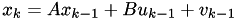
![\[z_k = Hx_k + w_k\]](form_17.png)
where:
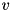 is the process noise (Gaussian with covariance Q)
is the measurement noise (Gaussian with covariance R)
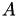 is the system matrix
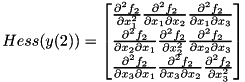 is the input matrix
 is the output matrix
is the output matrix
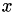 is the state vector
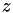 is the output vector
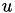 is the input vector
The noise covariance matrices must follow these conditions:
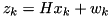
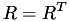
Example
An example provided in main1.cpp solves the car voltmeter problem using this library. The system model for this problem is governed by:
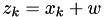
Therefore, we can summarize: 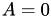, 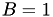, 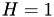, 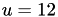, 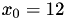, 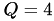, and . These values are the put into the following lines of codes.
The first line of the code above is used to create all necessary matrices with correct dimensions. All matrix operations use the Armadillo library. Please refer to the Armadillo documentation on how to create a matrix and set its element values. The next step is to create an instance of class KF and initialize it with the newly created , , 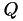, , and 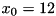.
The last step is to run the Kalman iteratively as shown in the codes below.

Extended Kalman filter for a nonlinear system
Definition
A non-linear system is described by:
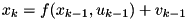
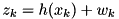
where:
 is the dynamic model of the system
is the dynamic model of the system
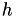 is the measurement model of the system
is the process noise (Gaussian with covariance Q)
is the measurement noise (Gaussian with covariance R)
is the state vector
is the output vector
is the input vector
The noise covariance matrices must follow these conditions:
Example
Here, main4.cpp is taken as an example which is adapted from this MATLAB Central page. The nonlinear system is described as:
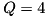
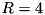
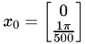
Class EKF needs to be derived to allow flexible implementation of the dynamic model and the measurement model of the system .
The following steps are similiar with the previous example as in the linear Kalman filter. We start by defining the number of states and outputs, then followed by creating matrix Q and R. An instance of class EKF is created afterward and the states are initialized.

Practical application: Using Kalman filter for smoothing noisy measurement data
The examples we have so far are theoritical. Very often what we would like to do is simply to reduce noise from preacquired measurement data. There are several reason why we want to use Kalman filter. For example, the noise has very wide spectrum, thus, using frequency based filter hurts the data.
In principal, there are 2 scenarios of using the Kalman filter. The first scenario is by first simulating the system as shown in the figure below. In this scenario, we only need to supply 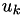 to the Kalman filter function. The Kalman filter will give us 4 outputs:  ,
,  ,
,  , and
, and  . and are called the true system states and the true system outputs, respectvely. They are noisy. , and are called the estimated system states and the estimated system outputs, respectively. They are filtered.
. and are called the true system states and the true system outputs, respectvely. They are noisy. , and are called the estimated system states and the estimated system outputs, respectively. They are filtered.
The function prototype for this scenario can be written as: [ , , , ] = function kalmanf( )

The second scenario is used when the measurements are availble. Thus, simulating the system becomes unnecessary. In this scenario, we need to supply and to the kalman filter function. The Kalman filter will give us 2 outputs: (the estimated system sates) and (the estimated system outputs).
The function prototype for this scenario can be written as: [ , ] = function kalmanf( , )

The second scenario is useful for smoothing noisy measurment data. However, both scenarios are availabe in this library.
Example
As an example, we will take the problem in main1.cpp. This time, however, we assume we already had several noisy data points from measurements. Therfore, we will not need the Kalman procedure to simulate the system.
The system model can be formulated into:
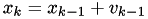
We then generate random number as the prerecorded noisy data (z_measurement), as the following:
After than, z_measurement is then sent to the Kalman filter function, as the following:
The kalman.Kalmanf(z_measurement, u) function above has different parameters with what we can find in main1.cpp. Since z_measurement is available, we then send it as a parameter for the kalmanf function. The processes above are done in several iterations according to the number of the availabe data points. The final codes will look like as the following:
The values that are given to Q and R are defined heuristically since we do not know the actual variances of the noise of the data.